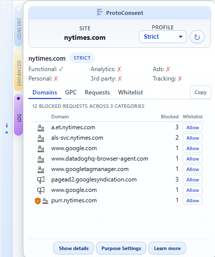
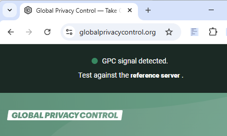
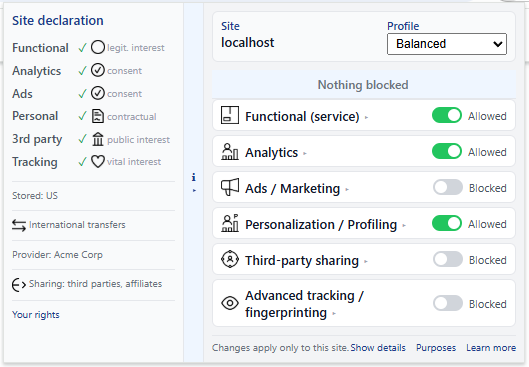

One place to manage how websites use your data — organised around
purposes, not vendors or domains. Complements your existing privacy
tools, doesn’t replace them.
Why ProtoConsent?
Moving purpose-based controls into the browser
Today, consent banners often put all the work on the user and all the power on each individual website. ProtoConsent explores a different approach: giving users a single place to manage data-use purposes across sites, and enforcing those choices at the browser level.
Give users one place to express their data-purpose choices across sites.
Complement existing consent and tag setups instead of replacing them.
Turn abstract “tracking” into concrete, per-purpose decisions.
Enforce choices with browser-level rules, not one more on-page script.
Per-site profiles and purpose toggles in the browser popup.
How it works
What ProtoConsent actually does
ProtoConsent is a browser extension that lets users define how different data‑use purposes should be treated on each site, then applies those rules locally in the browser. All preferences and enforcement happen on the user’s device.
Per‑site purpose profiles: choose how to treat functional, analytics, advertising, personalisation, third‑party services and advanced tracking for each domain.
Network‑level enforcement: uses browser extension APIs (such as declarative network rules) to block or allow requests related to specific purposes. The popup shows per‑purpose blocked counts and estimated performance savings.
Log monitoring: a dedicated Log tab with real‑time request activity, blocked domains grouped by purpose with Consent Commons icons, and GPC signal tracking per domain with timestamps.
Conditional GPC signal: sends a Sec‑GPC header only when privacy‑relevant purposes are denied — per site, not as a global on/off switch.
Site declarations: websites can publish a .well-known/protoconsent.json file declaring their data practices. The popup displays this alongside your preferences with Consent Commons icons.
Local‑only storage: no backend service and no external preference store.
Composable with CMPs: designed to sit alongside existing consent mechanisms and tag configurations.
What it looks like
Network‑level blocking with full transparency
The extension applies simple, declarative network rules based on your toggles,
without injecting scripts into pages or sending your data to a backend.
The Log tab shows blocked domains grouped by purpose with Consent Commons icons,
real‑time request activity, and GPC signals per domain with timestamps.

Blocked domains grouped by purpose in the Log tab.
Global Privacy Control
A legally recognised privacy signal, per site
ProtoConsent sends the Sec‑GPC header automatically when privacy‑relevant purposes (ads, third‑party sharing, advanced tracking) are denied for a site.
Unlike browser‑wide GPC toggles, ProtoConsent's signal is conditional and per‑site: it only fires when your purpose choices justify it. GPC already has legal weight under California's CCPA/CPRA and is under discussion in the EU.
Check it live on the demo site →

GPC signal detected on globalprivacycontrol.org when privacy purposes are denied.
Site declarations
Websites can declare their data practices
Any website can publish a .well-known/protoconsent.json file declaring which purposes it uses, what legal basis it claims, and which third parties it integrates.
The extension reads this file and displays it in a side panel next to your preferences, using Consent Commons icons. No SDK required — just a static JSON file, like robots.txt or security.txt.

Site declaration displayed in a side panel with Consent Commons icons. See the demo site for a complete example.
This site publishes its own .well-known/protoconsent.json — install the extension and open the side panel to see it live.
For a complete declaration with all protocol fields, visit demo.protoconsent.org.
ProtoConsent is a working browser extension with purpose-based enforcement,
a conditional GPC signal, site declarations, and an SDK. It's not yet
in extension stores, but you can install it locally and use it on real sites.
Install the extension in developer mode and define purpose profiles per site.
See network-level enforcement in action — blocked requests, per-purpose stats, estimated time savings, and a real-time Log tab with domain-level detail.
Publish a .well-known/protoconsent.json on your site to declare your data practices. Check it with the validator.
Integrate the SDK to read user preferences from your pages.
Open issues or pull requests on GitHub to discuss or contribute.
Open source (GPL-3.0+)SDK: MITFeedback welcomeOpen to collaboration
Who it's for today
Product, privacy & compliance teams
Explore what browser-level, purpose-based controls could look like in practice. Use the prototype to discuss consent flows, GPC signals with legal weight (CCPA/CPRA), and purpose-driven analytics choices with stakeholders and DPOs.
Developers & implementation engineers
Inspect the extension's architecture, rules, and data model. Integrate the SDK to read user preferences, or publish a .well-known/protoconsent.json file to declare your site's data practices without any code changes.
Website operators & publishers
Declare your site's data purposes with a single static JSON file — no SDK, no CMP, no code. ProtoConsent reads it and shows it to users alongside their preferences. A lightweight way to signal transparency.
Privacy-aware end users
Take control of how websites use your data with a clear, visual popup. See exactly what is being blocked per purpose, how much faster pages load, and what sites declare about their data practices — all from your browser, with no account or setup required.
Integrate the SDK
Read user preferences in 3 lines
The optional JavaScript SDK (MIT licensed) lets your site query the user's consent choices. If the extension is installed, you get a direct answer. If not, every call returns null — no errors, no side effects.
// Load the SDK (ES module, MIT licensed)
import ProtoConsent from 'protoconsent.js';
// Check a single purpose
const allowed = await ProtoConsent.get('analytics');
if (allowed) {
// user allows analytics on this site — load your scripts
}
// Or read all purposes at once
const all = await ProtoConsent.getAll();
// { functional: true, analytics: false, ads: false, ... }
This section queries the ProtoConsent extension in real time using the SDK protocol.
If the extension is installed, your current preferences for protoconsent.org are shown below.
Get involved
ProtoConsent is free and open source — GPL-3.0+ for the extension, MIT for the SDK, CC BY-SA 4.0 for documentation. Contributions, feedback, and adoption are all welcome.
Publish a .well-known/protoconsent.json on your site to declare your data practices. Check it with the validator.
Integrate the SDK (MIT) to read user preferences from your pages.
Open an issue or pull request on GitHub with feedback, bug reports, or ideas.